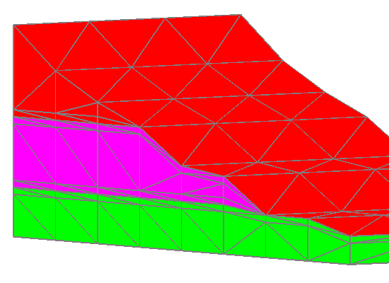

ROUTINE: stack
/ layers
Feature: truncating
surface
Read 5 surface files, truncate by 4th surface.
No buffers at interfaces, no refinements.
................................................................
surface name
layer color type llcorner zic
surf-12.inp
1 1 -1
1) -1.200000E+01
surf-5.inp
2 2 0
37) -5.000000E+00
surf5.inp 3 3
0 73) 5.000000E+00
surf_slope3.inp
4 4 0
109) 1.800000E+01
surf25.inp
5 4 -2
145) 2.500000E+01
Elements per layer:
48 total: 240
Nodes per layer:
36 total: 180
Layers truncated by surf_slope3.inp layer
4
STACK DONE: 5 files read out of 5
................................................................
x5buff
cmo create cmo1
stack/layers/avs/ surf-12.inp 1/ surf-5.inp 2/ surf5.inp 3/ surf_slope3.inp
4/ surf25.inp 4 / trunc 4 / buffer 1. pinch 0.

Read 5 surface files, truncate by 4th surface.
buffers at interfaces, no refinements.
................................................................
surface name
layer color type llcorner zic
surf-12.inp
1 1 -1
1) -1.200000E+01
buffer 2 1
1 37) -6.000000E+00
surf-5.inp
3 2 0
73) -5.000000E+00
buffer 4 2
1 109) -4.000000E+00
buffer 5 2
1 145) 4.000000E+00
surf5.inp 6 3
0 181) 5.000000E+00
buffer 7 3
1 217) 6.000000E+00
buffer 8 3
1 253) 1.700000E+01
surf_slope3.inp
9 4 0
289) 1.800000E+01
buffer 10 4 1
325) 1.900000E+01
surf25.inp
11 4 -2
361) 2.500000E+01
Elements per layer:
48 total: 528
Nodes per layer:
36 total: 396
Layers truncated by surf_slope3.inp layer
9
STACK DONE: 5 files
read out of 5
STACK DONE: 6 layers
created for total 11
x5top
cmo create cmo1
stack/layers/avs/surf-12.inp 1/surf-5.inp 2/surf5.inp 3/surf_slope3.inp
4/ trunc 4 / pinch 0.

Read 4 surface files, truncate by last surface.
No buffers at interfaces, no refinements.
................................................................
surface name
layer color type llcorner zic
surf-12.inp
1 1 -1
1) -1.200000E+01
surf-5.inp
2 2 0
37) -5.000000E+00
surf5.inp 3 3
0 73) 5.000000E+00
surf_slope3.inp
4 4 -2
109) 1.800000E+01
Elements per layer:
48 total: 192
Nodes per layer:
36 total: 144
Layers truncated by surf_slope3.inp layer
4
STACK DONE: 4 files read out of 4
................................................................
x5top_buff
cmo create cmo1
stack/layers/avs/surf-12.inp 1/surf-5.inp 2/surf5.inp 3/surf_slope3.inp
4/ trunc 4 / buffer 1. pinch 0.

Read 5 surface files, truncate by last surface.
buffers at interfaces, no refinements.
WARNING: znext for buffer not found
13 6 0.500000E+01
WARNING: znext for buffer not found
14 6 0.500000E+01
WARNING: znext for buffer not found
15 6 0.500000E+01
WARNING: znext for buffer not found
16 6 0.500000E+01
................................................................
surface name
layer color type llcorner zic
surf-12.inp
1 1 -1
1) -1.200000E+01
buffer 2 1
1 37) -6.000000E+00
surf-5.inp
3 2 0
73) -5.000000E+00
buffer 4 2
1 109) -4.000000E+00
buffer 5 2
1 145) 4.000000E+00
surf5.inp 6 3
0 181) 5.000000E+00
buffer 7 3
1 217) 6.000000E+00
surf_slope3.inp
8 4 -2
253) 1.800000E+01
Elements per layer:
48 total: 384
Nodes per layer:
36 total: 288
Layers truncated by surf_slope3.inp layer
7
STACK DONE: 4 files
read out of 4
STACK DONE: 4 layers
created for total 8
................................................................
Warnings are from post-processer that checks buffer points.
It happens because there is not a buffer under the truncated surface.
IMPLEMENTATION QUESTION: Should this top layer be buffered?
As is, code does not buffer the top layer, just the interfaces.
Feature: bead
algorithm for post processing
Images are 250 high by 500 wide, gmv = gmv -w 0 0 550 275

SUMMARY VOLUME/AREA of ELEMENT COLORS
Color nelem volume
fractional volume
1 288 0.2140000E+05
0.180743243
2 432 0.1620000E+04
0.013682432
3 432 0.2618000E+05
0.221114865
4 288 0.6920000E+05
0.584459459

Post process node changes =
76
unit 2 thickness = 2.0
SUMMARY VOLUME/AREA of ELEMENT COLORS
Color nelem volume
fractional volume
1 288 0.1942000E+05
0.164020270
2 432 0.3600000E+04
0.030405405
3 432 0.2618000E+05
0.221114865
4 288 0.6920000E+05
0.584459459

SUMMARY VOLUME/AREA of ELEMENT COLORS
Color nelem volume
fractional volume
1 288 0.1706000E+05
0.144087838
2 432 0.5400000E+04
0.045608108
3 432 0.2674000E+05
0.225844595
4 288 0.6920000E+05
0.584459459

SUMMARY VOLUME/AREA of ELEMENT COLORS
Color nelem volume
fractional volume
1 288 0.2140000E+05
0.180743243
2 432 0.5400000E+04
0.045608108
3 432 0.2430000E+05
0.205236486
4 288 0.6730000E+05
0.568412162

SUMMARY VOLUME/AREA of ELEMENT COLORS
Color nelem volume
fractional volume
1 288 0.1923000E+05
0.162415541
2 432 0.5400000E+04
0.045608108
3 432 0.2552000E+05
0.215540541
4 288 0.6825000E+05
0.576435811

SUMMARY VOLUME/AREA of ELEMENT COLORS
Color nelem volume
fractional volume
1 288 0.2284000E+05
0.192905405
2 432 0.0000000E+00
0.000000000
3 432 0.2636000E+05
0.222635135
4 288 0.6920000E+05
0.584459459